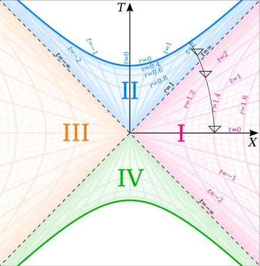

A coordinate singularity is an apparent infinity or discontinuity that arises in one coordinate system but disappears entirely when a different coordinate system is chosen, revealing it as a mathematical artifact of the chosen description rather than a physical feature of spacetime. Unlike a true physical singularity, a coordinate singularity carries no physical meaning and can always be removed by an appropriate change of coordinates.
The clearest everyday example is the North Pole in a latitude–longitude coordinate system. As an object moves due north along the Greenwich meridian, it reaches the North Pole at latitude 90° N. At exactly that point, longitude becomes undefined — the coordinate φ can take any value from 0° to 360° simultaneously. This discontinuity is purely an artifact of the coordinate system; the surface of the Earth is perfectly smooth at the pole. The same behaviour appears in spherical polar coordinates (ρ, θ, φ) at both poles, where θ = 0 and θ = π.

Dr Greg / CC BY-SA 3.0
{kind=link}
The Kretschmann Scalar Test
The critical test for whether a singularity is a coordinate artifact or a genuine physical singularity is to compute diffeomorphism-invariant quantities — quantities that have the same value in every coordinate system. The most commonly used such scalar in general relativity is the Kretschmann scalar, K = Rαβγδ Rαβγδ, where Rαβγδ is the Riemann curvature tensor. If the Kretschmann scalar remains finite at a problematic point, the singularity is a coordinate artifact. If it diverges, a true physical singularity exists at that location.
The Schwarzschild Metric: Two Singularities of Different Kinds
The most famous coordinate singularity in physics appears in the Schwarzschild metric, the exact solution to Einstein's field equations for a non-rotating spherically symmetric mass, found by Karl Schwarzschild in 1916. In Schwarzschild coordinates, the metric has apparent infinities at two locations: at r = rs = 2GM/c2 (the Schwarzschild radius) and at r = 0.
These two locations are radically different in nature. At r = rs, the Kretschmann scalar evaluates to K = 12/rs4 — a perfectly finite number. The apparent infinity in the metric is purely a coordinate artifact; observers can cross the event horizon freely in finite proper time. At r = 0, by contrast, the Kretschmann scalar diverges to infinity: no coordinate transformation can remove this divergence. This is a genuine physical singularity where spacetime curvature becomes infinite and general relativity breaks down.
The confusion between these two singularities persisted for decades. Arthur Eddington found a coordinate transformation regular at r = rs as early as 1924, but did not recognise its physical significance. In 1932, Georges Lemaître was the first to recognise explicitly that the singularity at r = rs was a coordinate artifact. David Finkelstein articulated the full physical meaning in 1958, demonstrating that the event horizon is a one-way null surface that infalling matter crosses in finite proper time — these are now known as Eddington–Finkelstein coordinates.
Kruskal–Szekeres Coordinates
The most complete resolution of the Schwarzschild coordinate singularity was provided by Kruskal–Szekeres coordinates, developed independently by Martin Kruskal and George Szekeres in 1960. These coordinates cover the entire maximally extended Schwarzschild spacetime with no coordinate singularity anywhere outside the true physical singularity at r = 0. In Kruskal–Szekeres coordinates the event horizon appears as the simple boundary T2 − X2 = 0, and the maximal extension reveals four distinct spacetime regions: two exterior regions, one black hole interior, and one white hole interior. Roger Penrose introduced conformal diagrams in 1965 to visualise this causal structure compactly.
Recognition that the Schwarzschild radius is a coordinate singularity — not a physical barrier — was among the most consequential conceptual advances in 20th-century theoretical physics. It confirmed that black holes are physically real, established the event horizon as a one-way null surface, and laid the geometric foundation from which Hawking radiation and the laws of black hole thermodynamics were subsequently derived. Analogous coordinate singularities appear in the Kerr metric for rotating Kerr black holes and require similarly adapted coordinate choices.